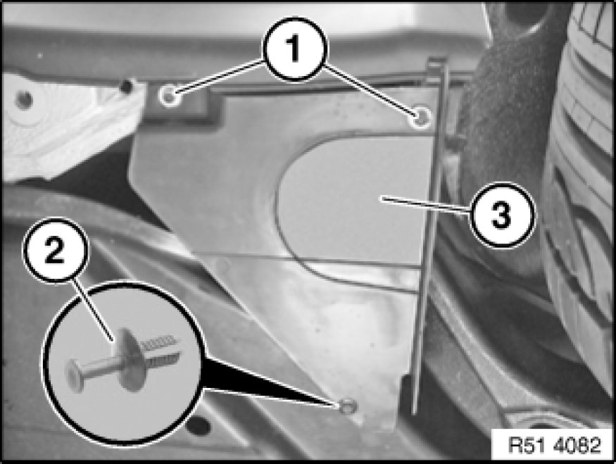
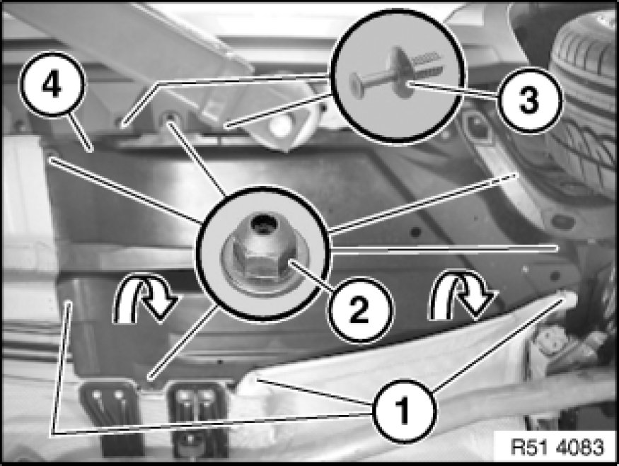

Removing and Installing/Replacing Left or Right Underbody Panelling
51 47 ... - Removing and installing/replacing left or right underbody panelling

Necessary preliminary tasks:
- Remove tension strut Removing and Installing/Replacing Left or Right Tension Strut
- If necessary, remove heat shield

Release screws (1).
Release expander rivet (2) and remove cover (3).

Unfasten screws (1) and nuts (2).
Release expander rivets (3).
Feed out underbody panelling (4) in direction of arrow and remove.